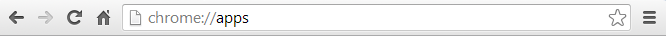
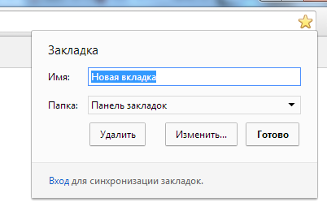

Анализ архитектуры интерфейса программы на примере:
браузера Google Chrome
Общая информация
Chrome – это простой, быстрый и безопасный веб-браузер для современного Интернета.Google Chrome обеспечивает быструю работу в Интернете. Он легко открывается с рабочего стола, мгновенно загружает страницы и без промедления запускает сложные веб-приложения.Браузер Chrome оснащен встроенной защитой от фишинга и вредоносного ПО, а также функцией автоматического обновления, гарантирующей своевременную установку исправлений для системы безопасности.
Интерфейс Google Chrome
По умолчанию интерфейс Google Chrome включает кнопки: назад, вперед, обновить/остановить загрузку, добавить текущую страницу в закладки,кнопка перехода на главную страницу, кнопка меню.

Панель вкладок является основным компонентом интерфейса и находится в верхней части окна, а не под строкой адреса. Это изменение выглядит достаточно контрастно по сравнению со многими другими браузерами. Вкладка легким перетаскиванием на свободное место может быть перенесена в отдельное окно (возможен также и обратный вариант). Каждая вкладка имеет свой собственный набор элементов, в том числе Omnibox.
Omnibox — это адресная строка, которая находится наверху каждой вкладки, она совмещает в себе адресную строку и строку поиска. Omnibox перенаправляет запрос в поисковую систему в том случае, если адрес не соответствует правилам написания URL — к примеру, не содержит точек, косых черт, содержит пробелы в начале адреса и т. д. При вводе поискового запроса Google, используя функцию поиска в Интернете «Мне повезет», предлагает первый по списку URL-адрес (например, при вводе в адресную строку слова «яндекс» браузер автоматически предложит вариант «www.yandex.ru»). Также автодополнение предлагается поиском по закладкам и истории ранее посещенных страниц. В браузере возможен вызов различных поисковых машин прямо из адресной строки. Для этого надо ввести сокращение для данной поисковой машины (например, букву 'g' для google), затем нажать клавишу «Пробел» и ввести поисковый запрос. Сокращения для поисковых машин можно задавать самостоятельно. При посещении сайтов браузер автоматически копирует оттуда строку поисковых запросов и в следующий раз при вводе этого сайта автоматически будет предложен поиск с использование его поисковой системы.

Одной из отличительных черт Chrome является страница быстрого доступа, которая может заменять домашнюю страницу и открывается при создании новой вкладки. На странице быстрого доступа содержится 8 наиболее посещаемых веб-сайтов (отображаются в виде маленьких снимков веб-страниц).
В правой части Omnibox расположена кнопка добавления закладки для текущей страницы.
